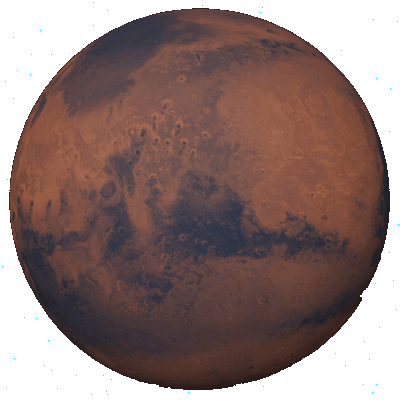

Project Clover
Welcome to your step-by-step guide to the fourth planet from the Sun. Click Next to progress through Martian physics, 60 years of robotic missions, and the permanent ice dome inside Korolev Crater.
01 Planetary Fundamentals
Gravity calculator, moons Phobos & Deimos, Olympus Mons & Valles Marineris.
02 Mars Mission History
From Mariner 4 flybys to Viking, Pathfinder, Curiosity, and Perseverance.
03 Korolev Crater
Interactive SVG cross-section of the 1.8 km ice dome & Cold Trap shield.

Loading the latest available NASA rover image…
Understanding the Red Planet
Mars is a dusty, cold desert world with a thin CO₂ atmosphere, two asteroid-like moons, and the largest geological landmarks in our solar system.
Your Weight on Mars
Surface gravity on Mars is 3.72 m/s² (about 38% of Earth's). Adjust your Earth weight below to calculate your Martian weight.
Size & Distance
Radius of 2,106 mi (3,390 km)—half Earth's size. Orbits at 142M mi (1.5 AU); sunlight takes 13 mins to arrive.
Dry land area equals nearly all of Earth's continents!
Orbit, Sols & Tilt
1 Martian day (sol) = 24.6 hrs. 1 year = 687 Earth days (669.6 sols).
25° axial tilt & elliptical orbit create unequal seasons (142–194 sols).
Extreme Topography
Olympus Mons: Tallest volcano in the solar system at 25 mi (40 km) high (Arizona-sized base).
Valles Marineris: 2,400 mi long canyon—10× longer than the Grand Canyon.
Two Moons: Phobos & Deimos
Potato-shaped captured asteroids named after Ares's chariot horses.
Phobos is spiraling inward and may form a ring in ~50M years.
60 Years of Mars Missions
Switch between exploration eras below to trace humanity's progression from early flybys to nuclear-powered roving laboratories and international orbiters.
Mariner 4
Following early Soviet Mars probe attempts, NASA's Mariner 4 executed the first successful flyby of Mars, capturing 22 close-up television images of the cratered surface.
Mariner 6 & Mariner 7
Twin spacecraft flew over the Martian equator and south polar cap, using infrared and ultraviolet spectrometers to analyze atmospheric composition and surface temperatures.
Mariner 9
Became the first spacecraft to orbit another planet. Arriving during a global dust storm, it waited out the dust to map 85% of Mars—discovering Olympus Mons and Valles Marineris.
Viking 1 & Viking 2
Twin orbiter-lander pairs. Viking 1 captured the first high-resolution color panoramas from the Martian surface and ran automated biological soil experiments.
Pathfinder & Sojourner
Bounced onto Mars inside giant airbags and deployed Sojourner—a microwave-sized, 6-wheeled rover that proved mobile robotics could navigate alien terrain.
Spirit & Opportunity
Twin robotic geologists built for 90-sol missions that lasted years (Opportunity ran nearly 15 years!), proving liquid water once flowed across ancient Mars.
Curiosity & Perseverance
Car-sized rovers lowered by Sky Crane. Curiosity confirmed a habitable ancient lake in Gale Crater; Perseverance caches biosignature cores and flew the Ingenuity helicopter.
Hope, Mangalyaan & Tianwen-1
ESA's Mars Express mapped Korolev Crater in 3D, joined by India's Mangalyaan, the UAE's Hope orbiter, and China's Tianwen-1 orbiter and Zhurong rover.
Anatomy of Korolev Crater
Located at (72.08-73.45)°N, (162.27-166.90)°E in the northern lowlands and named after Soviet rocket engineer Sergei Korolev, this basin holds a permanent 1.8 km dome of water ice.
Korolev Crater is an 82 km-wide impact crater near Mars'
north pole. It contains a massive deposit of water ice that remains frozen
year-round due to a layer of cold air above it. This makes it valuable for
studying Martian water resources and future human exploration.
Formation: Korolev Crater was formed billions of years ago
when a large asteroid
struck the surface of Mars, creating an impact basin approximately 82 km
wide.
potential Use: Its massive water ice deposits could provide
drinking water,
oxygen, and rocket fuel for future Mars missions. It may also support
scientific
research and serve as a potential base for human exploration.